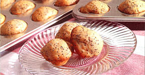
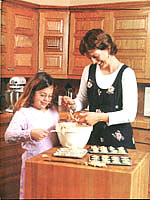
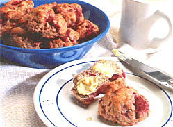
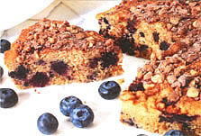
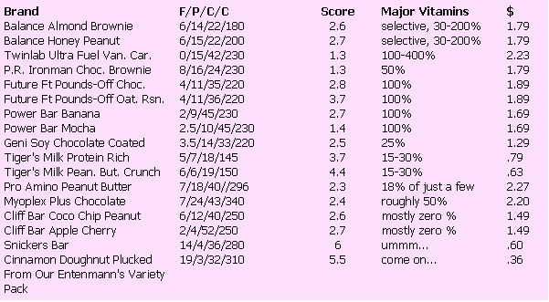

MOTHER'S KITCHEN
If the same old expensive cereal and doughnuts are making your want to go back to bed, Anne Vassal can put a healthy word in your ear.
I don't know about you, but I'm suffering from breakfast boredom. I never could stand an egg staring me in the face first thing in the A.M. Fresh fruit with yogurt is limited to the summer months. I despise bananas, the winter fruit. Bagels are good. Nope, done that. And oatmeal? Colorless mush. So what's left? Dunkin' Donuts? No way: I'd fall into a sugar coma. But I'm always ready for a tea treat - something sweet yet healthy - to lure me away from my warm, flannel-sheeted bed. That doesn't mean that I'm going to fly out of bed to whip up a batch of cinnamon rolls. Not being a morning person, it's a challenge just to fill the tea kettle. So I bake a few batches of goodies on a Saturday, plop them into Ziplock bags, and store them in the freezer for those desperate mornings. My sweet selection usually includes scones, muffins, sliced quick-breads, and rolls. There's nothing like the smell of a warm cinnamon roll and a cup of spicy, hot tea to get one rolling off to work. I make sure to hide them in the back of the freezer. Let the kids eat frozen waffles or Cheerios; these treats are for grown-ups. We deserve it.
Instead of using a rolling pin and biscuit cutter, these scones are dropped onto a cookie sheet; it's much faster. Serve warm with raspberry jam and yogurt cheese.
Dry:
2 cups sifted whole wheat pastry flour or unbleached white flour
3 tablespoons unsalted butter, well chilled
1/4 teaspoon nutmeg
2 tablespoons sugar
1/4 cup thick oats (old-fashioned, not quick-cooking)
1/2 teaspoon baking powder
1/2 teaspoon baking soda
Wet:
2 tablespoons honey
1/2 teaspoon almond extract 1/2 cup lowfat buttermilk
1 cup frozen raspberries* (Keep them frozen until ready to use.)
Preheat oven to 375°F. Grease a large cookie sheet. Pour the flour into a food processor or use a large bowl and pastry blender. Cut the butter into small cubes and pulse the processor a few times until the dough looks like bread crumbs. Pour in the wet ingredients and pulse just until blended. Briefly pulse in the frozen berries; over-mixing will crush them. Using an ice cream scoop, scoop the batter onto the cookie sheet in balls at least an inch apart. They should be about 1 1/2" in diameter and about 1" high. Bake for 20 minutes until lightly browned. Cool a few minutes; remove with a spatula. Must be served warm. For defrosted freezer scones, microwave for 10 seconds.
*Note: The berries need to be frost-free - without excess ice crystals - or else the scones will be mushy.
I love bite-size, pack portable muffins. If you don't have a mini-muffin pan, use a regular-sized muffin pan.
1 large egg
1/4 cup canola oil
1/3 cup sugar
2 tablespoons poppy seeds
1 tablespoon lemon rind
1 tablespoon lemon juice
1 teaspoon vanilla
1 carton (8 ounces) lemon-flavored yogurt
1 teaspoon baking powder
1/2 teaspoon baking soda
1 3/4 cup plus 1 tablespoon sifted whole wheat pastry flour* or unbleached white flour
Preheat oven to 375°F. My minimuffin pan is non-stick so I don't oil it. If yours isn't non-stick, you may use paper liners or oil the bottoms. In a large mixing bowl, beat well the egg, oil, sugar, poppy seeds, lemon rind, lemon juice, and vanilla. Briefly mix in the yogurt just until blended. In a separate bowl, stir together the dry ingredients. Add to the liquid mixture and mix slowly just until blended. Pour the batter into the muffin pan, filling each three-quarters full. Bake 15 minutes for mini-muffins, 20 minutes for regular muffins, until they're lightly browned. Let cool for 10 minutes before removing them from the pan. If you didn't use paper liners, stick a butter knife under the edge of each muffin to loosen.
*Make sure that your pastry flour doesn't look the same as whole wheat flour. Whole wheat flour has large flecks of wheat bran in it. Whole wheat pastry flour is made from a soft wheat berry that produces an off-white flour with barely visible wheat flecks. With the exception of yeasted bread and rolls, whole wheat flour is too heavy for baking.
Just lay one cinnamon stick on top of the grounds and make coffee as usual. I've tried this using an automatic Krups drip coffee maker and a percolator. It makes your kitchen smell wonderful.
2 tea bags (I use Celestial Seasonings) 2 to 3 cups water 1 cinnamon stick 1 strip of orange peel 3 slices ginger root 3 cardamom pods, crushed slightly 4 whole allspice or cloves
In a medium sauce pan, bring all the ingredients except tea bags to a boil, cover, and simmer on low for about 15 minutes. Remove from heat, add tea bags, cover, steep 5 minutes. Strain and serve.
This coffee cake is fast and easy. Any leftover wedges can be frozen in baggies for a later day.
Cake:
1/4 cup canola oil 1/4 cup maple syrup or honey 1 tablespoon sugar 1 large egg 1/2 teaspoon vanilla 1 tablespoon lemon juice 1 teaspoon lemon rind 1/2 cup lowfat buttermilk 2 teaspoons baking powder 1 1/2 cup sifted whole wheat pastry flour 1 cup blueberries, frozen
Topping:
1 tablespoon sugar (I use turbinado sugar)
1 teaspoon flour
1 teaspoon cinnamon
1/4 cup walnuts, finely chopped
Preheat oven to 350°F Lightly grease the bottom of an 8" or 9" round cake pan. Mix the topping together in a small bowl and set aside. Using a mixer, blend together the oil, maple syrup or honey, and sugar until smooth. Add the vanilla, lemon juice, lemon rind, and buttermilk and mix well. Briefly mix in the flour and baking powder. Stir in the frozen blueberries and pour into the cake pan. Sprinkle on the topping evenly. Bake for 25 minutes until an inserted toothpick comes out clean and the top is lightly browned. Don't overbake. Cool for 10 minutes before slicing into wedges.
Don't let the yeast scare you; these are easy to make. Just allow time for rising.
3/4 cup skim milk
2 tablespoons honey
1 package active dry yeast
1 tablespoon mild oil (canola)
1/2 teaspoon salt
1 cup unbleached white flour
1 cup whole wheat (not pastry) flour up to 1 cup white flour for kneading
Filling:
2 teaspoons cinnamon
1/3 cup brown sugar, packed
2 tablespoons real maple syrup
Glaze (optional):
1 tablespoon melted butter
1 tablespoon maple syrup
1. Lightly oil the bottom of two 8" or 9" cake pans and set aside. In a small saucepan, warm the milk and honey until it reaches 110°F. Since temperature is important when working with yeast, it's best to use a cooking thermometer. Pour the mixture into a large bowl and whisk in the yeast. Let stand for about 10 minutes until little bubbles form on the surface. Stir in 1 cup white flour, oil, and salt. Cover the bowl with a dish towel and keep in a warm place, such as inside a gas oven or on top of the stove, for 30 minutes.
2. Stir in the whole wheat flour then place the dough on a floured board or kitchen counter, using additional white flour to knead the dough. Knead the dough for at least 5 minutes, adding flour when it starts to get sticky. The dough will feel smooth and elastic when you're done kneading. Oil the bottom of the bowl. Turn the dough ball in the bowl so the oiled side is up. Cover with a dish towel and put in a warm place to rise for 1 hour.
3. Meanwhile, mix the filling together in a small bowl. When the dough is almost double in size, punch it down and roll into a large rectangle about 8"to 9" wide and about 1/4" thick; length isn't really important. Spread the filling onto the dough up to 1/4" from the edges. It may not spread evenly but that's OK. Beginning at the long end of the rectangle, roll the dough up tightly using both hands. The roll will be 8" to 9" long when completed. Using a serrated knife, slice evenly into 8 pieces. Place the rolls in the cake pans a half-inch apart and away from the sides of the pans. Let them rise in a warm place for 30 minutes or until they look like plump cinnamon rolls. Meanwhile, preheat the oven to 350°F.
4. Melt the glaze in a small saucepan and brush over the rolls. Bake for 20 to 25 minutes until lightly browned. Overbaking will burn the bottoms and they won't be as tender; watch carefully. Cool for 5 to 10 minutes; remove with spatula. Eat or freeze them right in the cake pan when cooled.
We are expected to believe many things about energy bars. Most critical is the notion that their particular combination of sugar, trace vitamins, and protein is an elixir somehow deserving two to three times the price of a Snickers bar. The second notion is that they are a suitable meal replacement. Never ones to wallow in the backwater of diet consciousness, many of the manufacturers listed below have tweaked their ingredients onto the "zone" bandwagon. Zone advocates strongly suggest that the American infatuation with high-carbohydrate and low- or no-fat food actually makes us fat by boosting blood insulin levels. Their earth-shattering recommendation is that we eat a balanced diet of roughly equivalent proportions of fat, protein, and carbohydrates. We are still rubbing our heads in bemusement after reading these reports, first written by our great-grandmothers a hundred years ago. A balanced diet...imagine that.
In any case, you can't swing a dead cat around here without hitting someone gnawing on one of these bars, so we decided to do a very informal taste test. At one extreme are a few pasty, chalk-flavored unfortunates, at the other, the almighty Snickers and Doughnut tag team: the ulti- mate meal replacements. The F/P/C/C stands for Fat/Protein/Carbohydrates/Calories. We asked the folks in the office to rank each bar's flavor from 5 (heaven in a wrapper) to 1(hell in a shrink-wrap). The score is an average of those rankings. - Matt Scanlon
|
 FOOD STYLIST: TRISH DAHL |
 |
 |
|
 |
 |
|